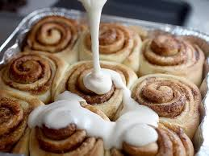

Home
Cinnamon Roll

Description
A cinnamon roll is a sweet roll served commonly in Northern Europe and North America. In North America its common use is for breakfast or dessert. Its main ingredients are flour, cinnamon, sugar, and butter, which provide a robust and sweet flavor. In some places, it is eaten with cream cheese frosting or icing.
Ingredients
Dough:
- 2 cups all-purpose flour, plus more as needed
- 2 tablespoons white sugar
- 2 teaspoons baking powder
- 1 teaspoon kosher salt
- 3 tablespoons unsalted butter, softened
- 2/3 cup whole milk
Filling:
- 1/2 cup unsalted butter, softened
- 1 cup packed brown sugar
- 2 tablespoons ground cinnamon
Frosting:
- 1/2 cup cream cheese, softened
- 1/4 cup unsalted butter, softened
- 1 1/2 cups powdered sugar
- 1/2 teaspoon vanilla extract
- 1/8 teaspoon kosher salt
Directions
- Preheat oven to 375 degrees F (190 degrees C). Grease a 9-inch round baking pan.
- Combine 2 cups flour, white sugar, baking powder, and salt in a bowl. Cut in 3 tablespoons butter using a pastry cutter until mixture resembles coarse crumbs. Stir in milk until dough pulls away from the side of the bowl.
- Turn dough out onto a floured work surface and knead 10 times. Roll dough into an 18x10-inch rectangle.
- Spread 1/2 cup butter over dough. Mix brown sugar and cinnamon in a bowl; sprinkle over butter. Roll dough around filling and cut into 12 slices.
- Place rolls in the prepared baking pan.
- Bake in the preheated oven until golden brown, about 30 minutes.
- Beat cream cheese, 1/4 cup butter, powdered sugar, vanilla extract, and salt together in a bowl until smooth. Spread frosting over warm rolls.